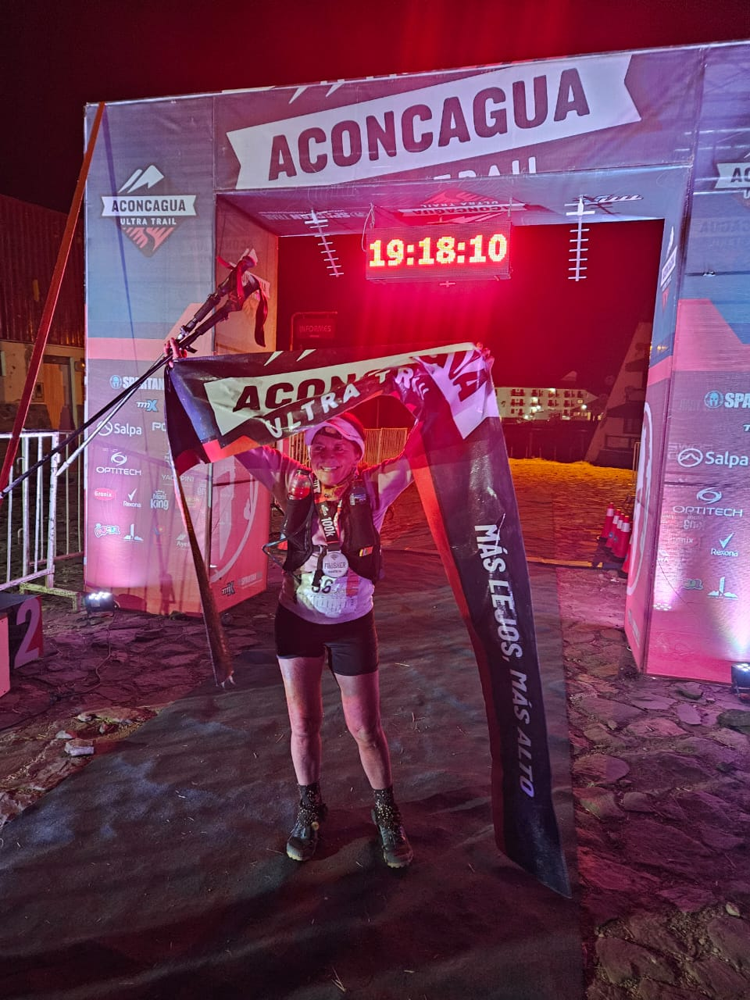

EL RUGIDO DEL ACONCAGUA
Quiero compartir mi mirada de mi participación en los 100 km de “Aconcagua Ultra Trail” el 16 de febrero de 2024. Obtuve el puesto 12º en la General Damas y el 2º en mi categoría Damas 50-59 años.
Ascendimos hasta los 4126 msnm en Plaza Francia y hasta los 3854 msnm en el Cristo Redentor.
El terreno que transitamos la carrera es propio de montaña, con el suelo rocoso y sin vegetación que proteja del sol y sobre todo del fuerte viento (ráfagas de hasta 60 km/h en el día de la carrera).
UN VIAJE HACIA LOS LÍMITES.
En el corazón de los Andes, donde el aire es tan fino que parece acariciar las estrellas, se alza el majestuoso Aconcagua. Para mí, una atleta amateur, este desafío de correr allí 100 km es como enfrentar a los dioses mismos. Pero aquí estoy, con mis pulmones luchando por cada bocanada de oxígeno, mis piernas temblando, y mi espíritu ardiendo.
No soy una montañista experimentada. Vengo de tierras planas, donde los cerros son solo líneas en los mapas. Pero mi corazón late con la urgencia de los aventureros, mi pasión por los desafíos me impulsa hacia adelante, así que me adentro hacia el camino, con una gran determinación.
EL VIENTO SILVA, llevando consigo los ecos de los que vinieron antes que yo. Los escaladores legendarios, los soñadores incansables. Sus huellas están en estos senderos y en la nieve, sus historias flotan en el aire. Y yo, una pequeña figura en este vasto paisaje, me siento parte de algo más grande. Su fuerza nos frena el avance, pero también nos acompaña con esas emociones.
Cada paso es una conquista. Cada roca, un desafío superado. La falta de oxígeno es mi compañera constante, pero también mi maestra. Me enseña a apreciar cada respiración, a valorar cada latido de mi corazón. Porque cada respiración es un esfuerzo, pero también una conexión con la vida misma. No hay tiempo para dudas ni miedos. Solo hay un camino: hacia arriba.
Llegando de los 100 km, luego de 19:16:04 hs

EL SOL comienza a reflejarse en la cumbre, a medida que avanzamos por el circuito. La imagen es conmovedora, ver crecer el día en esas luces, en ese fondo. Y yo, con mi mochila cargada de sueños, sigo ascendiendo.
En cada metro, pienso en aquellos que no pueden estar aquí. En los que luchan contra enfermedades, en los que enfrentan obstáculos insuperables. Mi esfuerzo es por ellos también. Porque en esta montaña, somos uno. Somos la humanidad desafiando sus límites.
LA META DE ESE ASCENSO, PLAZA FRANCIA, ESTÁ CERCA. Puedo sentirlo en cada fibra de mi ser. El viento se intensifica, como si la montaña misma me empujara hacia arriba. Y entonces, ahí está: el cartel que indica el Mirador de la pared sur. Las lágrimas llenan mis ojos. Soy una atleta amateur, pero en este momento, me siento invencible.
El Aconcagua me ha desafiado, me ha enseñado sobre la fuerza interior y la perseverancia. Y aunque mi cuerpo está cansado, mi espíritu está lleno de gratitud. Porque en esta montaña, he encontrado algo más grande que yo misma: la belleza de la naturaleza y la capacidad humana para superar límites.
Así que ahora te pregunto, ¿qué montaña enfrentas hoy? ¿Qué desafío te llama desde lo alto? No importa si es una carrera, un proyecto, o simplemente levantarte de la cama. Tú también puedes ser invencible. Porque la grandeza no está reservada para los expertos, sino para los valientes.
ELEVA TU MIRADA, respira profundo, y avanza. Porque en cada día, en cada desafío, hay una cumbre esperándote. Y cuando llegues, sentirás, como sentí yo, el rugido del Aconcagua en tu corazón.